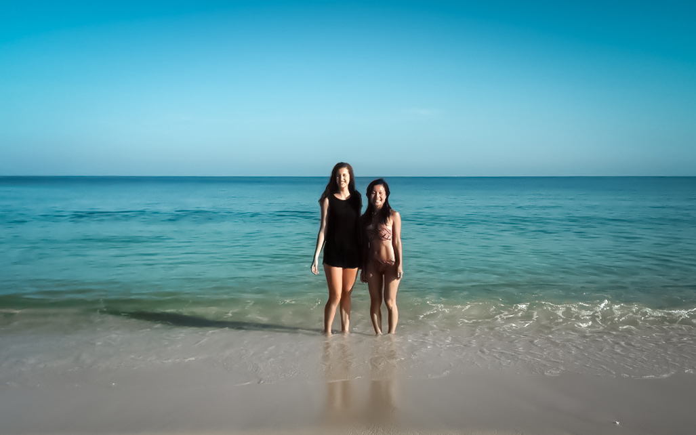

Colombia
May 24 to August 9, 2017
"Cruza el portal y estarás en el sendero. Pasar el umbral significa tonar una decisión, iniciar un camino. Un proceso de aprendizaje personal."

Bogotá
Bogotá, the heart of Colombia, shines with life beneath a perpetually overcast sky. Nestled at an impressive elevation of 2,640 meters, the city maintains a year-round temperature of around 18°C. The dozens of diverse neighborhoods of Bogotá weave together an array of culinary gems, museums, and clubs. The bustling metropolis is connected via the TransMilenio bus service, providing reliable and affordable transportation, although brace yourself for the inevitable rush-hour sardine can experience.
Every day in the touristy neighborhood of La Candelaria, you can join graffiti tours that promise to enrich your understanding of Bogotá's history. Over the course of three hours, a guide will lead you through the city's intricate past, delving into the realms of politics, uprisings, and religion, all skillfully narrated through the captivating medium of street art.
Desierto de la Tatacoa

Medellín
The 45 minute drive from José María Córdova International Airport of Medellin to the “City of Eternal Spring” is along a winding highway down the side of the mountain. At night, simultaneous lighting strikes race across the sky and the lights from the city shimmer like stars in the dark valley. In the city, massive trees line the chaotic streets swarming with motorcyclists, cars, minibuses and food trucks.
I learnt to motorbike from scratch on the mountain roads surrounding Medellín. I would frequently ride to remote towns in the valleys, and come back to my favourite mirrador by the abandoned brick home to watch the day transition to a star-studded night. As the sun dipped below the horizon, the enchanting spectacle of up to three simultaneous lightning storms in the distance never failed to captivate me.

Guatapé
El Peñón de Guatapé, a 740ft boulder which emerges abruptly from the plain countryside, has been a place of worship ever since the indigenous Tahamí, and was declared a national monument in the 1940s. Staircases zip-zag up The Rock, leading to sweeping views of Guatapé's lagoons. In the village, all the houses are decorated with colourful bas-reliefs.


Salento
Salento is the coffee capital of Colombia and also home to the Valle de Cocora — a tropical forest with towering palm trees.

San Gil, Santander Department
If you're craving adventure, then San Gil is the perfect destination for you! This vibrant town offers a mix of heart-pounding activities, including class 3-5 white water rafting, caving, bungee jumping and paragliding, all of which I managed to squeeze in during my stay. Outside of the town lays Barichara, a hamlet with cobbled streets and colonial architecture which is accessible via colectivo buses. Just past it is the even smaller town of Guane, boasting a mere ten streets, four cozy restaurants, one charming motel, and a magnificent cathedral. It's possible to walk to Guane from Barichara along a dirt path in roughly two hours.

Corales del Rosario National Park
